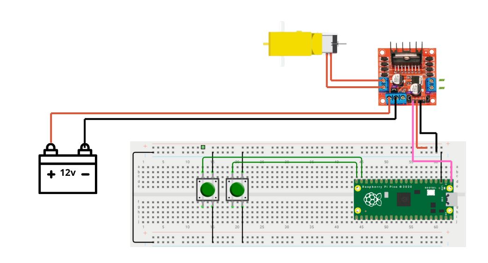

⚙️ Control de Duty Cycle — Motor DC
Selene Román Celis - 01/10/2025
Qué debe hacer
-
Implementar un circuito con un motor DC controlado mediante PWM variando el duty cycle.
-
Usar 2 botones para seleccionar entre 3 velocidades predefinidas (baja, media y alta).
Nota
No olvidar que el microcontrolador no entrega suficiente potencia, se debe usar un puente H o driver de motor para conectar el motor DC.
Valores de Duty
-
Velocidad Alta = TOP - Cuando el duty esta en 100%, la señal PWM está siempre en nivel alto.
-
max_level = 1023
-
Duty máximo 1023 / 1023 = 100%
-
-
Velocidad Media = TOP/2 - Con un duty del 50%, la señal PWM está en alto solo en la mitad del tiempo.
-
max_level = 511
-
Duty máximo 511 / 1023 ≈ 50%
-
-
Velocidad Baja = TOP/4 - Con un duty del 25%, la señal PWM solo está en alto una cuarta parte del ciclo.
-
max_level = 255
-
Duty máximo 255 / 1023 ≈ 25%
-
Código
#include "pico/stdlib.h"
#include "hardware/pwm.h"
#define MOTOR_PIN 0
#define B_UP 1
#define B_DOWN 2
#define F_PWM_HZ 2000
#define TOP 1023
int main() {
stdio_init_all();
gpio_set_function(MOTOR_PIN, GPIO_FUNC_PWM);
uint slice = pwm_gpio_to_slice_num(MOTOR_PIN);
uint chan = pwm_gpio_to_channel(MOTOR_PIN);
float f_clk = 150000000.0f;
float div = f_clk / (F_PWM_HZ * (TOP + 1));
pwm_set_clkdiv(slice, div);
pwm_set_wrap(slice, TOP);
pwm_set_chan_level(slice, chan, 0);
pwm_set_enabled(slice, true);
gpio_init(B_UP);
gpio_set_dir(B_UP, GPIO_IN);
gpio_pull_up(B_UP);
gpio_init(B_DOWN);
gpio_set_dir(B_DOWN, GPIO_IN);
gpio_pull_up(B_DOWN);
int level = 0, step = 8, dir = +step;
int max_level = TOP / 2;
while (true) {
if (!gpio_get(B_UP)) {
if (max_level < TOP) max_level = TOP;
sleep_ms(200);
}
if (!gpio_get(B_DOWN)) {
if (max_level > TOP/4) max_level = TOP/2;
else max_level = TOP/4;
sleep_ms(200);
}
if (level >= max_level) dir = -step;
if (level <= 0) dir = +step;
level += dir;
pwm_set_chan_level(slice, chan, level);
sleep_ms(5);
}
}
Esquemático
